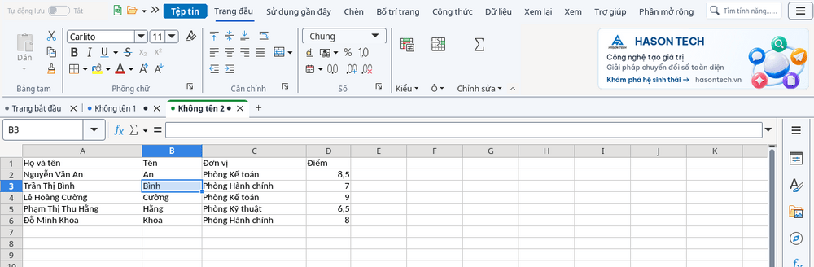
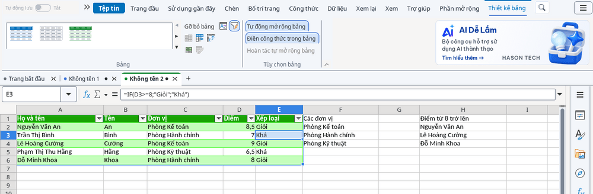

Bảng tính
Bảng tính: làm quen
HST Sheets giúp bạn tính toán, lập bảng lương và thống kê. Một tệp bảng tính có thể có nhiều trang tính.
Nhận biết hàng, cột và ô
- Trang tính: chọn bằng các thẻ ở cạnh dưới cửa sổ.
- Hàng: đánh số 1, 2, 3… ở cạnh trái.
- Cột: đặt tên A, B, C… ở phía trên.
- Ô: giao của một hàng và một cột. Ví dụ,
B3là ô ở cột B, hàng 3.

Bắt đầu nhập dữ liệu
- Chọn trên .
- Chọn ô cần nhập, rồi gõ nội dung hoặc số liệu.
- Nhập các dữ liệu tiếp theo vào những ô tương ứng trong bảng.
- Nhấn Ctrl+S để lưu.
Trong bảng mẫu, họ tên nằm ở cột B, ngày vào làm ở cột D và lương cơ bản ở cột E.
Tự điền nhanh (Ctrl+E)
Tự điền nhanh nhận ra quy luật từ một hai ô mẫu bạn gõ rồi điền cả cột, ví dụ tách tên từ cột họ tên.
- Ở cột ngay bên cạnh dữ liệu, gõ kết quả mong muốn cho dòng đầu, ví dụ gõ
AncạnhNguyễn Văn An. - Chọn ô tiếp theo trong cột đó, rồi nhấn Ctrl+E, hoặc chọn .
- Kiểm tra kết quả. Nếu HST Sheets chưa nhận ra quy luật, hãy gõ thêm một hoặc hai ví dụ rồi thử lại.

An ở B2, chọn B3 rồi nhấn Ctrl+E: cột Tên được điền đủ.Trong HST Sheets, Ctrl+E là Tự điền nhanh như trong Excel, không còn là căn giữa. Để căn giữa ô, dùng nút căn giữa ở nhóm của thẻ .
Bảng tự mở rộng và cột tính toán
Chọn vùng dữ liệu có dòng tiêu đề rồi nhấn Ctrl+T để tạo bảng. Sau đó bảng hoạt động như bảng của Excel:
- Nhập dữ liệu vào hàng ngay dưới hoặc cột ngay bên phải bảng: bảng tự mở rộng để chứa dữ liệu mới.
- Nhập công thức vào một ô của cột trong bảng: công thức được điền cho cả cột (cột tính toán).
Hai tính năng này bật, tắt ở thẻ (hiện khi con trỏ ở trong bảng), nhóm : và . Ngay sau khi bảng tự mở rộng, trả bảng về phạm vi cũ mà vẫn giữ dữ liệu vừa nhập.

Xếp loại ở cột E thì bảng mở rộng; nhập công thức ở E2 thì cả cột được điền.